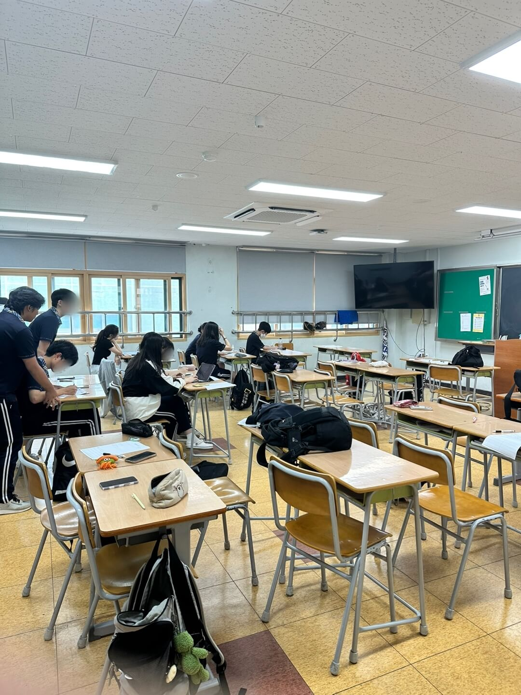
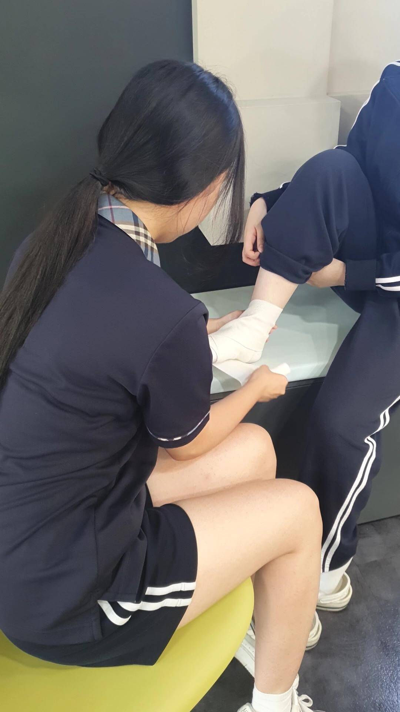
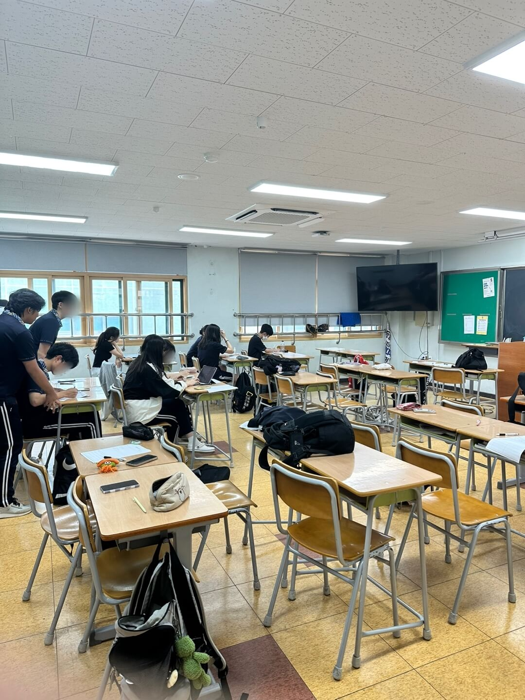
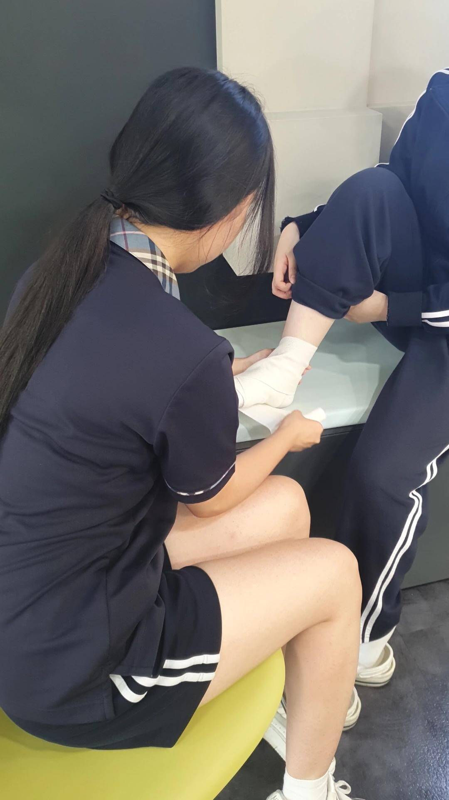

동의보감 동아리
저희 동의보감은 학생들이 건강과 관련된 지식을 배우고 실천할 수 있도록 돕는 동아리입니다. 저희 동아리는 응급 처치, 정신 건강 등 다양한 주제를 다루며, 학생들이 일상 생활에서 건강을 유지하는 데 필요한 정보를 제공합니다. 또한, 약사님, 심폐소생술 전문 강사님 등 다양한 보건과 관련된 분을 섭외해 강의나 함께 실습을 합니다. 보건 캠페인 등을 통해 학생들이 주도적으로 건강 증진 활동에 참여하고, 지역 사회의 건강 문제에 대한 인식을 높이는데 기여합니다.
 


